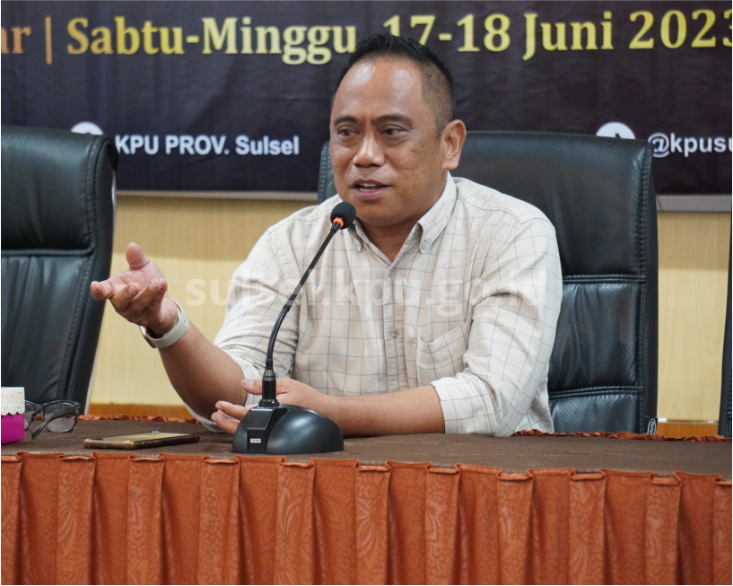

Informasi
Komisi Pemiliihan Umum
Pengumuman

Pengumuman DCT DPRD SULSEL
PENGUMUMAN DAFTAR CALON TETAP (DCT) ANGGOTA DPRD PROVINSI SULAWESI SELATAN DALAM PEMILU TAHUN 2024
PENGUMUMAN SELEKSI ANGGOTA KPU
PENGUMUMAN HASIL SELEKSI CALON ANGGOTA KPU KABUPATEN/KOTA
PENGUMUMAN HASIL TES TERTULIS & PSIKOLOGI
PENGUMUMAN HASIL TES TERTULIS DAN TES PSIKOLOGI CALON ANGGOTA KPU KABUPATEN/KOTA PROVINSI SULAWESI SELATAN
Berita Terkini

KPU Sulsel Merumuskan Program "GREBEG" Sosdiklih
Divisi Sosialisasi, Pendidikan Pemilih dan Partisipasi Masyarakat KPU Kabupaten/Kota se-Sulawesi Selatan susun program srategis Sosialisasi dan Pendidikan Pemilih pada Pemilu dan Pemilihan Serentak Tahun 2024

Audiensi Dengan Polda Sulsel, KPU Sulsel Ajak Polda Sulsel Sukseskan Pemilu Serentak 2024
KPU Provinsi Sulawesi Selatan melakukan Audiens dengan Kapolda Sulawesi Selatan, Senin (12/6/23) bertempat di Polda Sulawesi Selatan.

KPU Sulsel Paparkan Visi & Misi Keterbukaan Informasi Publik Pada Uji Kepatutan Augerah Tinarbuka 2023
Komisi Informasi (KI) Pusat Republik Indonesia melaksanakan Uji Kepatutan kepada peserta Anugerah Tinarbuka 2023